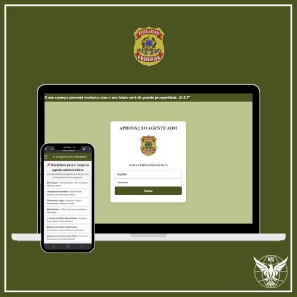
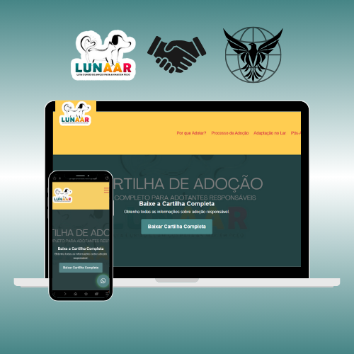
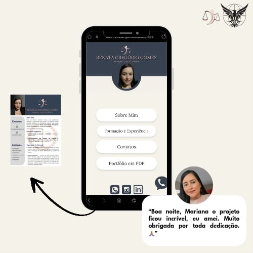
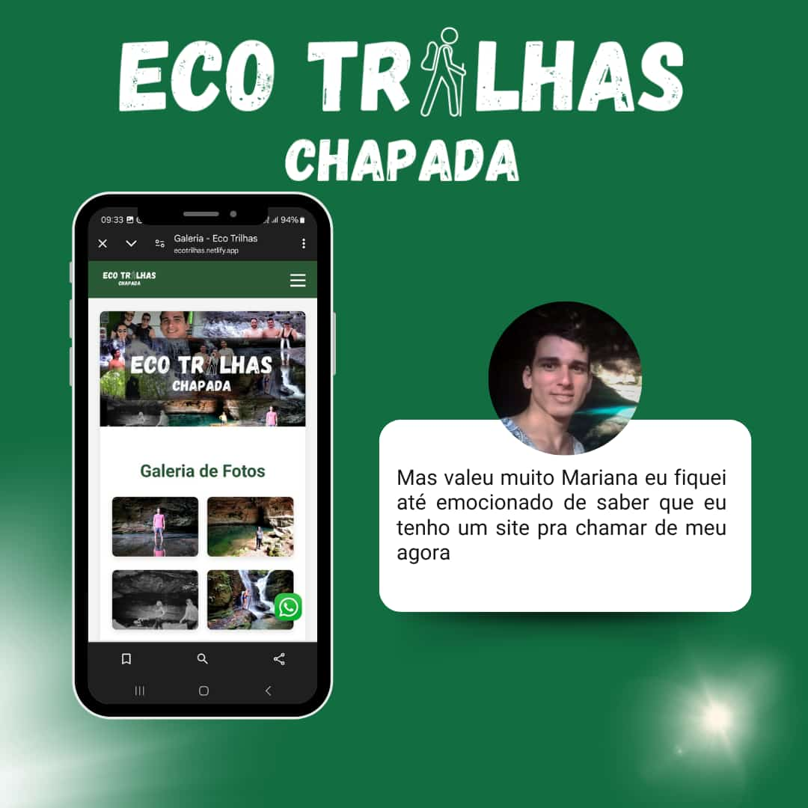
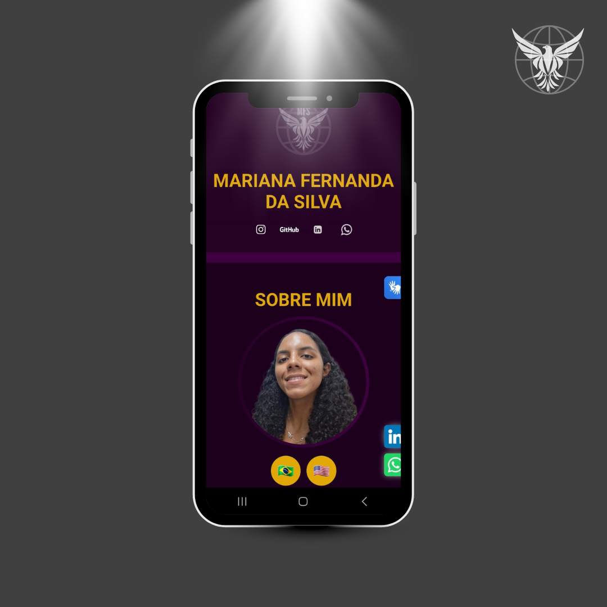
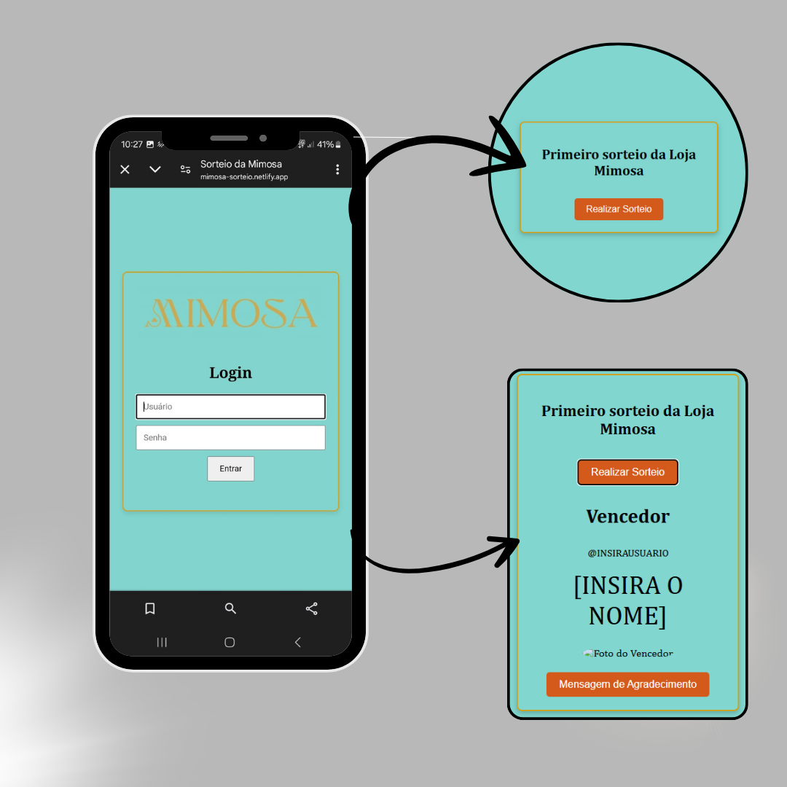

EAGLEWEB
Acesse o sitePlataforma de Estudos
Study Plataform

Este projeto foi criado para otimizar meus estudos para o concurso da Polícia Federal, especificamente para o cargo de Agente Administrativo. Ele envolve a organização de materiais, resolução de exercícios e revisão de conteúdos com foco nas disciplinas exigidas no edital. Além disso, utilizei um backend exclusivamente para armazenar senhas de forma segura, garantindo proteção aos meus dados de estudo.
This project was created to optimize my studies for the Federal Police exam, specifically for the Administrative Agent position. It involves organizing study materials, solving exercises, and reviewing subjects required in the official syllabus. Additionally, a backend was implemented exclusively for securely storing passwords, ensuring the protection of my study data.
Ver VídeoProjeto Filantrópico
Philanthropist Project

O Projeto website LUNAAR, desenvolvido utilizando HTML, CSS e Javascript, serve com um guia para adoção responsável. Oferecendo informação detalhada sobre o processo de adoção, incluindo os benefícios de adotar, Passo a passo da adoção, como preparar a casa para o novo pet e cuidados pós-adoção.
The Projeto LUNAAR website, developed using HTML, CSS, and JavaScript, serves as a comprehensive guide for responsible pet adoption. It offers detailed information on the adoption process, including the benefits of adopting, steps to adopt, how to prepare your home for a new pet, and post-adoption care.
MG Personalizados
O MG Personalizados é um projeto que combina criatividade e tecnologia para oferecer soluções exclusivas e personalizadas. Criado com foco em inovação e atenção aos detalhes, o projeto entrega produtos e serviços de alta qualidade que refletem o estilo e as necessidades de cada cliente. Seja para presentes or eventos, o MG Personalizados transforma ideias em realidade com excelência.
MG Personalizados is a project that combines creativity and technology to offer exclusive and personalized solutions. Designed with a focus on innovation and attention to detail, the project delivers high-quality products and services that reflect the style and needs of each client. Whether for gifts or events, MG Personalizados turns ideas into reality with excellence.
Landing Page para Advogada
Landing Page for Lawyer

Este projeto foi desenvolvido para apresentar de forma clara e objetiva o trabalho e os valores da advogada Renata Gomes. A landing page foi criada com foco em funcionalidade e design moderno, oferecendo uma experiência intuitiva para os visitantes. Aqui, os clientes podem acessar informações importantes sobre os serviços prestados, áreas de atuação e entrar em contato de maneira prática e eficiente.
This project was developed to clearly and effectively present the work and values of lawyer Renata Gomes. The landing page was designed with a focus on functionality and modern design, offering an intuitive experience for visitors. Here, clients can access essential information about the services offered, areas of expertise, and easily get in touch.
ECO TRILHAS CHAPADA

A arquitetura do site foi projetada para proporcionar uma experiência de navegação fluida, com uma interface amigável e responsiva, que se adapta a dispositivos móveis e desktops.
The architecture was designed to provide a seamless navigation experience, featuring a user-friendly and responsive interface that adapts to both mobile and desktop devices.
PORTFÓLIO VIRTUAL
VIRTUAL PORTFOLIO

O site Portfólio Mariana Silva foi projetado para apresentar de forma elegante e funcional o trabalho e as habilidades da profissional. Com foco em uma experiência de navegação intuitiva, a plataforma combina uma interface moderna e responsiva, garantindo acessibilidade em diferentes dispositivos.
The Mariana Silva Portfolio website was designed to elegantly and functionally showcase the professional's work and skills. Focusing on an intuitive browsing experience, the platform combines a modern and responsive interface, ensuring accessibility across various devices.
MIMOSTOCK
SISTEMA DE GESTÃO
Management System
O Mimostock é uma aplicação web projetada para o gerenciamento interno de estoque e vendas, oferecendo ferramentas acessíveis com funcionalidades que incluem controle de entradas e saídas de produtos, registro de transações, relatórios detalhados e gestão de permissões de usuários, o sistema centraliza informações essenciais, reduz erros e melhora a eficiência operacional.
The Mimostock is a web application designed for internal inventory and sales management, offering accessible tools and with features that include product inflow and outflow control, transaction recording, detailed reports, and user permission management, the system centralizes essential information, reduces errors, and improves operational efficiency.
MIMOSA SORTEIO
MIMOSA GIVEAWAY

O site Mimosa Sorteio foi desenvolvido com o objetivo de oferecer uma experiência simples e eficiente para a realização de sorteios. A plataforma conta com uma interface intuitiva e responsiva, garantindo fácil usabilidade tanto em dispositivos móveis quanto em desktops.
The Mimosa Sorteio website was developed with the goal of providing a simple and efficient experience for conducting raffles. The platform features an intuitive and responsive interface, ensuring ease of use on both mobile devices and desktops.
FORTIVIDA
O Fortivida é uma plataforma dedicada a compartilhar técnicas, informações e recursos relacionados ao sobrevivencialismo. O site foi criado para ajudar pessoas a se prepararem para possíveis catástrofes ambientais, conflitos e outros desafios futuros.
Fortivida is a platform dedicated to sharing techniques, information, and resources related to survivalism. The site was created to help individuals prepare for potential environmental disasters, conflicts, and other future challenges.